-
Systems Engineering Introduction
-
What Is Systems Engineering?
- Systems Engineering (SE): Integrative approach -> team collaboration -> manage complexity & system delivery.
- Systems thinking: Foundation of SE -> focus on wholes & internal part interrelations.
- SE goal: Ensure parts achieve whole-system objectives.
- SE practitioners: Operate within project teams -> apply holistic, balanced, life cycle approach
- SE responsibility: Realize systems fit for purpose
- Accomplish intended purposes.
- Resist real-world operation effects.
- Minimize unintended actions, side effects, & consequences.
-
Definition of SE
- SE Definition: Systems Engineering is a transdisciplinary and integrative approach to enable the successful realization, use, and retirement of engineered systems, using systems principles and concepts, and scientific, technological, and management methods.
- SE Focus:
- Balance stakeholder goals, purpose, & success criteria.
- Define needs, operational concepts, & functionality early in development cycle.
- Establish life cycle model, process approach, & governance.
- Account for complexity, uncertainty, change, & variety.
- Generate & evaluate alternative concepts & architectures.
- Baseline & model requirements & architectures per stage.
- Perform design synthesis, verification, & validation.
- Evaluate problem & solution domains taking into account enabling systems & services.
- Map part relationships -> overall behavior & performance.
- SE Role: Provide facilitation, guidance, & leadership -> integrate disciplines & specialty groups.
- Development process: Concept -> Development -> Production -> Utilization -> Support -> Retirement.
- Business & technical needs: Address acquirer requirements -> provide quality solution.
- Risk management goals:
- Mitigate failure to deliver acquirer’s wants & needs.
- Prevent late delivery.
- Control excess cost.
- Avoid negative unintended consequences.
- Utility of SE is measured by degree of risk reduction using SE.
-
Definitions of System
- System Origin: -> “whole” consisting of interacting “parts”.
- System Definition: A system is an arrangement of parts or elements that together exhibit behavior or meaning that the individual constituents do not.
- System interpretations: Viewed as product or the services it provides.
- Context clarified by associative nouns (e.g., medical system) or synonyms (e.g., pacemaker).
- Complete system:
- Equipment & facilities.
- Material.
- Computer programs & firmware.
- Technical documentation.
- Services.
- Personnel.
- System Types:
- Physical systems: Matter & energy -> exhibit behavior.
- Conceptual systems: Abstract information -> exhibit “meaning”. Eg: Flight Control Software
- Combination of both. Eg: The “Cyber-Physical” System of An Autonomous Drone.
- System properties emerges from:
- parts & properties.
- relationships & interactions b/w & among (parts, system, external systems, environment).
- Engineered system: An engineered system is a system designed or adapted to interact with an anticipated operational environment to achieve one or more intended purposes while complying with applicable constraints.
- Engineered system elements:
- People.
- Products.
- Services.
- Information.
- Processes.
- Natural elements.
-
Why Is Systems Engineering Important?
- SE Purpose: conceive, develop, produce, utilize, support, & retire right product/service within budget & schedule constraints.
- Product Delivery Requirements:
- Common understanding of current system state.
- Common vision of future states.
- Common Vision Achievement through application of proven methods based on standard approaches across people, processes, & tools, continuous throughout the system’s life cycle
- Methodology transforming stakeholder needs, expectations, & constraints -> solution.
- SE Importance due to Complexity:
id:: 69655f27-857b-4808-a893-7ef3262c70ec
- Integration of commercially available products.
- Integration of independently managed/operated systems -> emergent capabilities.
- Market Acceleration:
- Reliance on off-the-shelf & systems of systems (SoS) -> reduced concept-to-market time.
- $1880$ to $2000$ : average $25%$ market penetration time reduced > factor of $4$ .
- 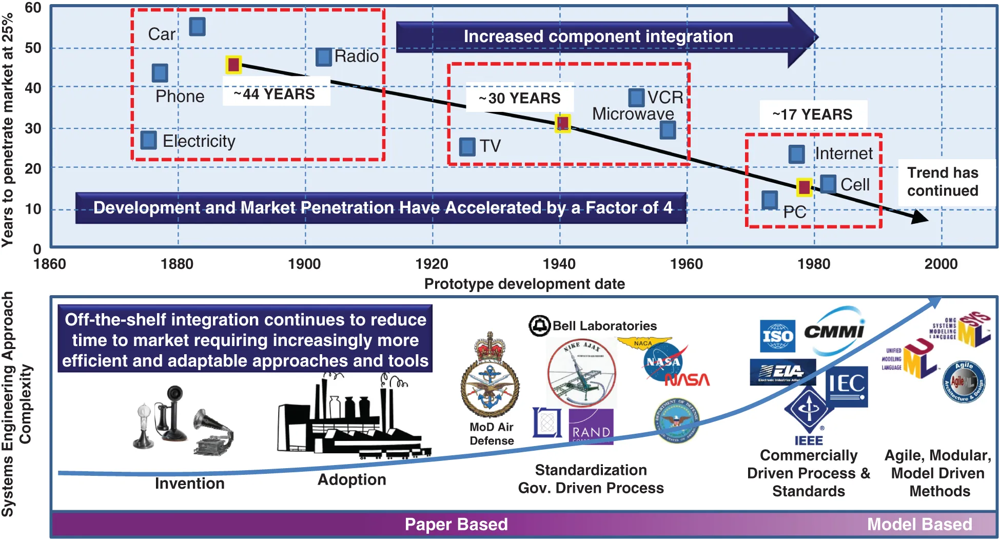{:height 373, :width 661}
- Methodological Evolution:
- Agile methods & SysML: manage complexity & increase common system vision implementation.
- Model Based SE (MBSE): improves productivity & quality in early conceptual design & requirements analysis.
- Digital Engineering (DE): creates transparent data & optimized cooperation across engineering disciplines.
- AI & ML Integration: increases complexity of verifiability, safety, & trust in self-learning systems.
- Honour Study (2013) ROI return on investment at University of South Australia:
- Quantifies SE activity impact on project cost & schedule.
- Optimum SE Effort: $10%$ to $14%$ of total project cost.
- Diminishing Returns: SE effort > $14%$ -> unwarranted processes -> reduced ROI.
- Correlation Factor: SE effort correlates w/ project success at ~ $80%$ .
- 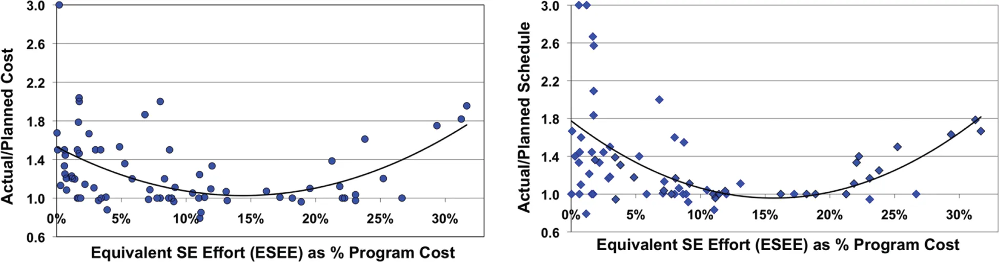{:height 235, :width 714}
- SE Return on adding additional SE activities to a project:
Current SE effort (% of program cost) Average cost overrun (%) ROI for additional SE effort (cost reduction $ per $ SE added) 0 53 7.0 5 24 4.6 7.2 (median of all programs) 15 3.5 10 7 2.1 15 3 –0.3 20 10 –2.8 - Elm & Goldenson Study (2012) by NDIA and IEEE:
- Surveyed $148$ projects regarding SE maturity vs. performance.
- Lower SE Capability: $15%$ high performance / $52%$ low performance.
- Moderate SE Capability: $24%$ high performance / $29%$ low performance.
- Higher SE Capability: $57%$ high performance / $20%$ low performance.
- Well-applied SE increases the probability of successfully developing an engineered system
 {:height 276, :width 384}
{:height 276, :width 384}
- DAU Life Cycle Cost LCC Analysis (1993) on DoD:
- Life Cycle Cost (LCC) is the total cost of owning, operating, and maintaining an asset or project over its entire lifespan, from initial acquisition (cradle) to final disposal (grave)
- LCC Commitment: $~80%$ of total LCC committed by $~20%$ of actual cost accrual.
- Reducing Technical Debt: early issue identification via SE reduces fix costs.
 {:height 306, :width 476}
{:height 306, :width 476}
- INCOSE Value Propositions (2021):
- Commercial/Market-Driven Industry: enhances development of innovative products/services & effective market competitiveness in mature & immature markets.
- Government/Aerospace/Defense/Infrastructure:
- Tailorable systematic approach (accommodating from Agile -> Sequential) from concept to retirement.
- Facilitates open architectures -> lower acquisition, maintenance, & upgrade costs.
- Accurate requirements and allocation -> fewer design changes.
- Nonprofit/Research:
- Enhances capability for development of innovative client services
- Enhances discovery & invention effectiveness.
- Supports technology development via internal SE practice.
-
Systems Concepts
- Introduction
- System Concepts: include System of Interest (SoI), System Environment, & External Systems.
- System Boundaries: define separation between system & surrounding elements.
- Differentiate SoI, Enabling Systems, Interoperating Systems, & Interfacing Systems.
- Support SE practitioner in accounting for all elements within whole system context.
- Modes & States: represent fundamental system behavior characteristics.
- Structural Organizations:
- Hierarchical: organized via structural levels.
- Complex: hierarchy not always present.
- System Concepts Framework: encompasses all system structures -> supports SE practitioner.
-
System Boundary and the System of Interest (SoI)
-
General System Concepts
- System Environment/Context: external elements that do not belong but interact w/ system.
- Includes:
- Users & operators.
- Operating environment.
- External systems interfacing/supporting system throughout life cycle.
- Includes:
- System Boundary: line of demarcation between System of Interest (SoI - system under consideration) & greater context.
- Defines system membership.
- Distinct from subset of elements interacting w/ environment. System environment is physical, system boundary is metaphysical
- System Functionality: derived from system-environment interactions
- System Architecture (ISO/IEC/IEEE 42020:2019): Fundamental concepts or properties of an entity in its environment and governing principles for the realization and evolution of this entity and its related life cycle processes.
- When a system is considered as an integrated combination of interacting elements, the functionality of the system derives not just from the interactions of individual elements with the environmental elements but also from how these interactions are influenced by the organization (interrelations) of the system elements
- Speaks to both the internal and external views of the system
- System Environment/Context: external elements that do not belong but interact w/ system.
-
Scientific Terminology Related to System Concepts
- Engineering: practice creating/sustaining systems, services, devices, machines, structures, processes, & products -> improved quality of life effectively and efficiently.
- Scientific repeatability ensures practical engineering solutions w/ commercial value.
- Attribute: observable characteristic or property of system/element. Eg: Speed of an aircraft
- Variable: symbol/name identifying an attribute.
- Possesses a domain - could be but is not necessarily measurable.
- Measurement: Outcome of a process in which SoI interaction w/ observation system under specified conditions -> assigns Value to variable.
- Variable: symbol/name identifying an attribute.
- System State: constant/steady attribute values over meaningful period.
- System Elements: possess attributes & processes (e.g., operations of software objects).
- Processes: binary logical values (idle or executing).
- Complete System State Description: requires assigned values for both attributes & processes.
- Dynamic Behavior: time evolution of system state.
- Emergent Behavior: system behavior not understood exclusively via individual element behaviors.
- Black Box (Opaque Box): external view of system attributes.
- White Box (Transparent Box): internal view of attributes & element structure.
- System Representation: integrates external attributes, internal attributes, structure, & scientific interrelationship between these.
- Engineering: practice creating/sustaining systems, services, devices, machines, structures, processes, & products -> improved quality of life effectively and efficiently.
-
-
Emergence
- Emergence: phenomenon where properties of whole entities are meaningful only when attributed to whole, not elements.
- Checkland (1999): human activity systems possess properties deriving from element activities & structure but not reducible to them.
- Sillitto & Dori (2017): emergence is a fundamental property of all systems.
- Rousseau et al. (2018): properties system possesses which elements alone lack, a systems science concept.
- Emergent Properties: result from element interactions or system-environment interactions.
- Create desirable or undesirable phenomena:
- Inhibition.
- Interference.
- Resonance.
- Reinforcement.
- Many engineering disciplines include emergence as a property.
- Systems Safety (Leveson, 1995)
- Systems Resilience (Rasoulkahni, 2018)
- Create desirable or undesirable phenomena:
- Architecture Definition: analyzes element interactions -> reinforce desirable & prevent undesirable emergence.
- Rousseau et al. (2019): Systemic virtue of emergent properties are used during systems architecture and design definition to highlight necessary derived functions & physical/environmental constraints.
- Add derived requirements to system requirements baseline when impacting SoI.
- Complexity Dominance (Calvo-Amodio & Rousseau, 2019): differentiates kinds & degrees of complexity.
- SE practitioner uses variety engineering -> manage complexity.
- Rules of Emergence:
- Individual elements cannot exhibit higher-level system emergence.
- Interaction requires $\ge 2$ elements.
- Emergence occurs at level above individual elements.
 {:height 213, :width 374}
{:height 213, :width 374}
- Emergence: phenomenon where properties of whole entities are meaningful only when attributed to whole, not elements.
-
Interfacing Systems, Interoperating Systems, and Enabling Systems
- External Systems: systems beyond or outside SoI boundary.
- Interfacing Systems: external systems sharing interface w/ SoI.
- Interface types:
- Physical.
- Material.
- Energy.
- Data/information.
- Typically humans interface w/ SoI throughout life cycle.
- Interface types:
- Interoperating Systems: interfacing systems that interface with the SoI in its operational environment performing common function.
- Support SoI primary purpose.
- SoI + interoperating systems -> System of Systems (SoS).
- Enabling Systems: external systems facilitating SoI life cycle activities.
- Not direct elements of operational environment.
- Provide services during $\ge 1$ life cycle stages.
- Some enabling systems share an interface with the SoI and some do not
- Examples:
- Collaboration development systems.
- Production systems.
- Logistics support systems.
- Interacting System Example:
- All inter-operating systems are interfacing systems, but not the inverse
-
SOI and External Systems Interfacing System Interoperating System Enabling System Aircraft Flight simulator No No Yes Fuel Truck Yes No Yes Remote Maintenance Yes Yes Yes Communication system Yes Yes No Runway Yes No No Automobile SE Tool No No Yes Car carrier Yes No Yes Diagnosis system Yes Yes Yes Parking assistant Yes Yes No Windshield snow cover Yes No No
- Concurrent Consideration: analyze interfacing, interoperating, & enabling systems alongside SoI during its life cycle stages.
- Prevents unidentified requirements & significant downstream costs.
- System Pitfalls:
- Assuming new enabling systems online in time for SoI development.
- Assuming existing enabling systems remain available throughout SoI life cycle.
- Lifecycle Risks: delay/loss of enabling systems -> development & deployment issues for SoI.
- Horizontal & vertical integration considerations -> system context represented in interfacing, interoperating, & enabling systems
-
System Innovation Ecosystem
- System Innovation Ecosystem: form of group learning across individuals, teams, enterprises, supply chains, markets, & societies.
- System Innovation Ecosystem Pattern: neutral descriptive model used to represent, plan, analyze, & improve performance (Schindel & Dove, 2016; Schindel 2022b).
- System 1 – Engineered System: product, defense system, or service subject to SE life cycle management.
- Exists within System 2 environment.
- Examples: Medical Devices, Aircraft, Consumer Packaged Goods, & Gas Turbine Engines.
- Termed the Engineered SoI.
- System 2 – Life Cycle Project Management System: socio-technical system (people, processes, facilities) providing environment for System 1.
- Responsibilities: learn about System 1 & environment -> apply learning to life cycle management.
- Examples: Requirements Definition, Verification, Manufacturing, Distribution, Sustainment, PLM Information Systems, & Digital Twin Systems.
- System 3 – Enterprise Process and Innovation System: contains System 2.
- Responsibilities: learn about & improve System 2 through organizational change management.
- Examples: Methodology Descriptions, Engineering Automation Tooling, Regulatory Authorities, Engineering Professional Societies, & Recruitment/Education.
- Ecosystem Pattern Integration: incorporates SE life cycle processes -> couples execution w/ prior learning for System 1 & System 2.
- Model Descriptive Purpose: reference model for planning & analyzing any engineering/life cycle management ecosystem.
- Knowledge Hierarchy:
- System 2 Learned Models -> describe knowledge of System 1.
- System 3 Learned Models -> describe knowledge of System 2.
- Pattern Configuration: adapts to local enterprise, project, or supply chain -> plans migration increments for advancing System 2 capabilities.
-
The Hierarchy within a System
- System Element: discrete part fulfilling specified requirements (ISO/IEC/IEEE 15288, 2023).
- Includes: hardware, software, data, humans, processes, procedures, facilities, materials, & natural entities.
- Atomic Element: element requiring only black box (external) representation for specification.
- Enables confident make, buy, or reuse decisions without further decomposition.
- Hierarchy: organizational representation of system structure using partitioning relation.
- Product Breakdown Structure (PBS): complete set of distinct system elements partitioned from whole system.
- Span of Control: heuristic recommending $7 \pm 2$ subordinate elements (Urwick, 1956; Miller, 1956).
- Too few elements -> potential redundancy in design & verification activities.
- Too many elements -> unmanageable interface complexity between subordinate elements.
- Horizontal View: interrelationships of elements, requirements, activities (integration, verification, validation), & artifacts at specific architecture level.
- Vertical View: relationship showing how horizontal elements derive from higher-level systems or lead to lower-level system elements.
 {:height 410, :width 591}
{:height 410, :width 591}
- System Element: discrete part fulfilling specified requirements (ISO/IEC/IEEE 15288, 2023).
-
Systems States and Modes
- System State: An observable and measurable … attribute used to characterize the current configuration, status, or performance-based condition of a System or Entity.(Wasson, 2016)
- State Snapshot: set of variables/measurements describing capability to perform functions.
- State Variables: multidimensional list determining system state (Buede & Miller, 2016).
- List remains constant over time.
- Values change over time.
- Control Theory: physical quantities determining system evolution
- MBSE Perspective: concise description of system past history.
- Future State Computation: current state + subsequent inputs $\rightarrow$ future states
- Computation ignores history of inputs & responses.
- Operating & Physical Conditions:
- Structural status: operational, failed, degraded, absent.
- Physical condition: e.g., fuel tank level, battery charge.
- Environment constraints: e.g., temperature, humidity.
- Monitoring & Management: managers observe state variables comprised of system attributes
- System Mode: A distinct operating capability of the system during which some or all of the system’s functions may be performed to a full or limited degree.(Buede and Miller, 2016)
- PC Examples (Wymore, 1993): off, on, waking up, waiting, reading/writing disk, computing, printing, down.
- Functional Architecture: derived via affinity analysis of system use cases
- Operating Mode Perspectives:
- Mission phases: taxiing, taking-off, cruising, landing.
- Operating conditions: connected, autonomous.
- Usage conditions: test, training, maintenance.
- Mode Transitions: results of decisions by system, users, or external actors
- Decisions based on observed state variable values.
- Transitions based on triggering events meeting entry & exit criteria
- System State: An observable and measurable … attribute used to characterize the current configuration, status, or performance-based condition of a System or Entity.(Wasson, 2016)
-
Complexity
- Simple System: elements w/ state relationships readily comprehended once observed.
- Complicated System: elements w/ state relationships unfolded & comprehended -> sufficient certainty between cause & effect.
- Complex System: elements w/ interwoven state relationships -> insufficient certainty between cause & effect.
- Complexity Characteristics:
- Systems typically possess mixture of complex, complicated, & simple traits.
- INCOSE Complexity Primer identifies $14$ distinguishing characteristics defining complexity.
- Complexity Impact:
- Positive behavior: self-organization & virtuous cycles.
- Negative dynamics: novel, nonlinear, & counterintuitive behavior over time.
- Risks: suboptimal operation, unintended consequences, & system obsolescence.
- Methodological Approaches:
- Reductionist Approach (Traditional SE): decomposes problem into parts -> solves -> reassembles whole.
- Suits complicated problems w/ fixed, deterministic, or predictable behavior.
- Iterative Approach: understands emergent interactions via exploration & adaptation.
- Suits complex environments (e.g., autonomous vehicles, socio-technical systems).
- Reductionist Approach (Traditional SE): decomposes problem into parts -> solves -> reassembles whole.
- Complex SE Requirements: balance linear/procedural methods (systematic activity) w/ holistic/nonlinear methods (systems thinking).
- SE Tailoring: practitioners must match techniques & approaches to specific system type & complexity level.
- Introduction
-
Systems Engineering Foundations
-
Uncertainty
- Uncertainty Types:
- Epistemic Uncertainty: results from lack of knowledge.
- Examples: potential demand, future technology/system/process performance, value attribute gaps, & acquirer preferences.
- Focus of system requirements process & development decisions.
- Aleatory Uncertainty: results from inherent randomness.
- Present in every performance measurement.
- Cannot be completely reduced.
- Epistemic Uncertainty: results from lack of knowledge.
- Uncertainty Sources impact project managers & SE practitioners throughout system life cycle
- Decision Making under Uncertainty:
- Decisions before knowledge acquisition increase risk.
- Key decisions require closing knowledge gap to appropriate level.
- SE practitioners record corresponding risks when deciding under uncertainty.
- Uncertainty Types:
-
Cognitive Bias
- Cognitive Bias: mental errors in judgment under uncertainty via simplified info processing (heuristics)
- Consistent & predictable behavior.
- Categorized under Behavioral Decision-Making.
- Bias Impact: distorts decision making -> incidents, failures, or disasters.
- Affects individual & team SE practitioners
- Mitigation Strategies: understand bias & establish organizational projects for unbiased assessments.
- Apply formal methods for major system decisions
- External Group Methods: most effective mitigation approach.
- NASA Independent Technical Authority (ITA): warns decision makers of potential failure.
- Requires financial & organizational independence from project manager
- Aviation Crew Resource Management (CRM): mandates all crew members warn pilot of imminent danger.
- NASA Independent Technical Authority (ITA): warns decision makers of potential failure.
- Cognitive Bias: mental errors in judgment under uncertainty via simplified info processing (heuristics)
-
Systems Engineering Principles
- Systems Engineering (SE): exists as relatively young discipline (~ $30$ years).
- SE vs. System Principles:
- System Principles: address behavior & properties of all systems via scientific basis.
- SE Principles: build on general system principles & human activity systems
- INCOSE SE Principles (2022): contains $15$ transcendent principles & $20$ subprinciples.
- Principle Application: aids in determining life cycle models, implementing processes, & defining organizational constructs -> successful SoI development & sustainment.
-
Systems Engineering Heuristics
- SE Heuristics: short natural language expressions capturing accumulated professional wisdom.
- Function as shortcuts, “rules of thumb,” or “words of the wise.”
- Provide general guidelines for professional conduct, advice, & situational action.
- Serve as decision-making aids & entry points for learning.
- Contexts of Use:
- Engineering Knowledge Encapsulation: makes accessible widely accepted practices & understood science.
- Analytical Supplement: overcomes limitations of analytical approaches in complex, unbounded, or ill-structured problems.
- Historical Development:
- Knowledge Capture: ancient engineering (buildings, machines) recorded “how to” skills -> avoid repeated failures.
- Early Rules: cathedral builders utilized “rules of thumb” (e.g., maintain low center of gravity; $80%$ mass in pillars).
- Co-evolution: engineering & applied sciences drive mutual research & performance prediction.
- Modern Complexity: SE incorporates social, behavioral, management, & systems sciences.
- System Architecture Guidance:
- Heuristics guide system architects coordinating complex problem solutions.
- Often superior to detailed analysis due to high variable counts & stakeholder interaction complexity.
- Key SE Heuristics:
- Problem Verification: question original problem statements -> reach mutual stakeholder understanding early.
- Early Unknowns: prioritize unidentified variables over known problems during initial stages.
- Model Before Build: utilize evolutionary life cycles, rapid prototypes, & agile methods.
- System Science Postulate: “The only complete model of the system in its environment is the system in its environment.”
- Heuristics Repository:
- Functions as knowledge base via video, training, & interactive media.
- Requires metadata tagging & links to established knowledge sources.
- Organized by SE competency areas -> supports assembly of personalized heuristic sets.
- SE Heuristics: short natural language expressions capturing accumulated professional wisdom.
-
-
System Science and Systems Thinking
- Systems Worldview: emerges from interrelated concepts (boundary, relationships, environment, hierarchy, emergence, communication, control) + purpose.
- Systems Thinking: recognizes patterns across phenomena, problem contexts, & disciplines.
- Balances Systematic application (processes) w/ Systemic analysis (thinking).
- Virtuous Cycle: SE application -> reflection -> improved systems science & systems thinking -> enhanced complex system design.
- Principle Hierarchy:
- Motivational Principles: express intentions.
- Transdisciplinary Principles: select & organize technique principles.
- Technique Principles: guide SE practice.
 {:height 352, :width 607}
{:height 352, :width 607}
- Systems Science: transdisciplinary approach identifying behavior patterns & establishing general theory for physical, natural, engineered, & social systems.
- Scientific Paradigms:
- Reductionism: explains system workings via atomic units or isolable causal trains.
- Complexity Theory: utilizes bottom-up agent-based modeling
- Holism: connects/contextualizes elements & environment -> understands organized complexity patterns.
- General System Theory (GST): universal principles applicable to systems irrespective of component nature or relations.
- Focus areas: Growth & regulation, Hierarchical order & equifinality, Progressive differentiation, mechanization, & centralization, Closed & open systems, Competition & evolution -> higher organization, Teleology & goal-directedness.
- Systems Methodologies: translate hypotheses -> practical action.
- Examples: System dynamics, Viable system model, Soft systems methodology (SSM), Critical systems heuristics (CSH)
- System of Systems Methodologies (SOSM): classifies methodologies by complexity & stakeholder viewpoints.
- Critical Systems Thinking (CST): multi-perspectival, multi-methodological approach combining methods based on strengths/weaknesses.
- Methodology Integration: hybrid solutions tailored via technical, organizational, cultural, & political factors -> address hyper-complexity.
-
-
System Life Cycle Concepts, Models, and Processes
-
Life Cycle Terms and Concepts
- Introduction
- SE Purpose: enable successful system realization & optimize competing stakeholder objectives.
- Realization Management: partition effort -> transformational Stages.
- Stage Evaluation:
- Check system characteristics fulfillment.
- Assess risk acceptability.
- Verify stage entry readiness.
- Execution Flexibility: stages occur multiple times, in parallel, or non-sequentially.
- Decision Gates: specific decision points gating progress.
- System Life Cycle: set of stages defining engineered system progression.
- Decision gates determine stage completion & initiation.
-
Life Cycle Characteristics
- 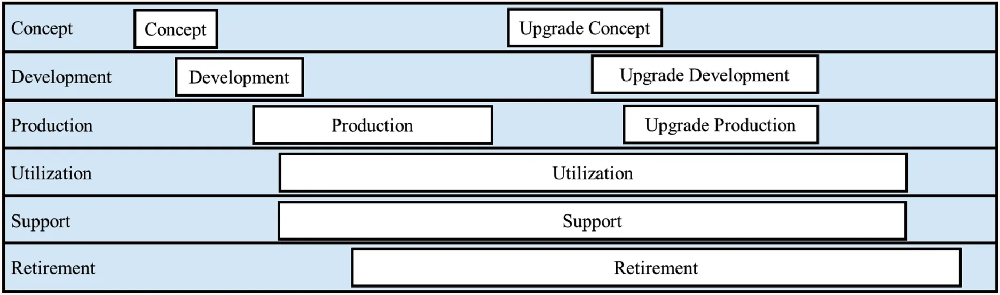{:height 175, :width 510}
- Life Cycle Stages: define progress toward system characteristics.
- Stage Dynamics:
- Entry triggered by SoI or system element needs.
- Support multiple entries, concurrency, & overlapping.
- Allow non-sequential execution.
- Retirement Stage: applies to whole SoI or specific system elements.
- Decision Gates:
- Entry Gate: verifies entry criteria fulfillment & resource availability.
- Exit Gate: confirms objective achievement & risk acceptability.
- Interdependent Life Cycles:
- System Elements: possess individual life cycles requiring management for SoI integration.
- System of Systems (SoS): constituent system evolution impacts SoI life cycle.
- Enabling Systems: require integration w/ SoI life cycle.
- Integration Strategy: flow down requirements to elements.
- Synchronize decision gates across diverse life cycle models -> support progressive integration.
- Temporal Variability: stage duration varies by system type.
- High-longevity systems (e.g., jet aircraft, nuclear facilities): rapid development -> decades of utilization/support.
- Short-longevity systems (e.g., mobile phones): frequent development -> brief utilization/retirement periods.
- Stage Purpose: facilitates decision-making at critical milestones.
-
Typical Life Cycle Stages
- Concept Stage: starts w/ mission/business need recognition.
- Exploration Factors: address technical, economic, market, & human resource considerations.
- Methods: surveys, trade-off studies, business/mission analyses.
- Objectives:
- Define problem space (existing issue or new opportunity).
- Characterize solution space.
- Identify stakeholder needs & requirements.
- Estimate cost, schedule, & performance across life cycle.
- Risk Management: perform ongoing robust assessment.
- Stakeholder Feedback: obtain from customers, users, & suppliers.
- Enabling Systems: consider maturity & availability.
- Outputs:
- Preliminary artifacts: Operational Concept (OpsCon) & Support Concept.
- SE methodology approach.
- Feasibility assessments: models, simulations, & prototypes.
- Preliminary architecture & system requirements.
- Acquisition strategies.
- Criticality: decisions shape & limit remaining life cycle stages.
- Development Stage: defines SoI meeting needs for production, utilization, support, & retirement.
- Methods: system analysis, trade-off analysis, modeling, simulation, & prototyping.
- Goal: mature concepts $\rightarrow$ engineering baseline.
- Engineering Baseline: includes requirements, architecture, design, documentation, & plans.
- Outputs:
- SoI prototype.
- Enabling system requirements.
- Plans: integration, verification, validation, transition, & acquisition.
- Management plans: logistics, risk, staffing, & training.
- Detailed cost estimates & schedules.
- Execution: supports incremental/phased realization for complex systems.
- Production Stage: translates development baselines $\rightarrow$ actual system upon approval.
- Scope: includes enabling systems & all baseline areas.
- Objectives:
- Realize SoI.
- Qualify for use.
- Prepare for installation & transition.
- Outputs:
- Realized SoI portions & enabling systems.
- Documentation for utilization, support, & retirement.
- Utilization Stage: begins w/ transition to use in intended environment.
- Enabling Systems: support system capabilities.
- Product Modifications: remedy deficiencies, enhance capabilities, or extend life.
- SE Requirements:
- Maintain documentation from prior stages.
- Apply Technical Management Processes (Configuration & Risk Management).
- Ensure ongoing SE support.
- Timeline: typically longer than other stages; proceeds in parallel w/ Support stage.
- Support Stage: begins w/ provisioning support for utilization.
- Timing: planning & acquisition often precede utilization.
- Activity: monitor deficiencies/failures $\rightarrow$ remediation or evolutionary modification.
- Modification Goals: resolve supportability, reduce costs, or extend life.
- SE Assessment: prevent capability loss or requirement violations during modification.
- Termination: ends at end-of-useful-life or support cessation decision.
- Retirement Stage: removes system/element/services from operation.
- SE Focus: satisfy disposal requirements.
- Activity: archive documentation from utilization & support stages.
- Planning: occurs during Concept & Development stages.
- Legal Accountability: developer often responsible for proper end-of-life disposal.
- Concept Stage: starts w/ mission/business need recognition.
-
Decision Gates
- Decision Gates: risk-managing points gating progress at stage boundaries.
- Ensure stage readiness & objective fulfillment.
- Context: “project milestones” or “milestone reviews.”
- Require documented decisions based on established criteria.
- Agile Decision Points: utilize alternative cadence.
- Avoid terms “milestones” & “decision gates.”
- Frequent stakeholder interaction -> increased frequency, reduced scope, & decreased formality.
- Decision Gate Goals:
- Confirm system maturity within threshold.
- Satisfy business case via project deliverables.
- Ensure sufficient resources for current & subsequent stages.
- Address unresolved issues.
- Maintain acceptable overall risk for life cycle progression.
- Criteria for decision gate
 {:height 253, :width 480}
{:height 253, :width 480}
- Decision Logic Cases:
- the entry criteria are met, but the start of the stage is delayed;
- when the entry criteria are met, the decision to start the stage is made;
- although the entry criteria are not met, the stage is started;
- although the exit criteria are met, the decision to end the stage is delayed;
- when the exit criteria are met, the decision to end the stage is made;
- the decision to end the stage is made before the exit criteria are met.
- Gate Decision Options:
- Begin subsequent stage(s).
- Continue current stage (w/ potential reformulation).
- Restart/return to preceding stage.
- Hold project activity.
- Terminate project.
- Differentiated decisions (complex systems): move parts forward, hold parts, terminate/reform others.
- Approval Requirements:
- Qualified experts, stakeholders, & management review.
- Evidence of criteria compliance.
- Balance formality & frequency -> critical success factor.
- Avoid superficial/skipped reviews -> prevents long-term costs & failures.
- Environmental Changes:
- Track changes in business case, system scope, & resources.
- Update & evaluate decision criteria at every gate -> prevents cost overruns & delays.
- Configuration Management:
- Approve artifacts (documents, analysis, models) as basis for future work.
- Place artifacts, decisions, rationale, & assumptions under configuration control.
- Decision Gates: risk-managing points gating progress at stage boundaries.
-
Technical Reviews and Audits
- Technical Review: SE activities at transition points assessing progress vs technical requirements & criteria
- Audit: detailed review of processes, products, & compliance -> confirms required attributes or configuration.
- Planning & Integration:
- Record reviews/audits in Systems Engineering Management Plan (SEMP) & schedule.
- Integrate w/ decision gate reviews.
- Tailor per project needs & methodologies
- Baseline Relationship:
- Connect reviews/audits -> technical baselines.
- Depiction varies between sequential & incremental life cycle models.
- Relationship between technical reviews and audits and the technical baselines
 {:height 261, :width 448}
{:height 261, :width 448}
- Assessment Objectives:
- Requirement & stakeholder expectation fulfillment.
- Quality Characteristics (QCs) acceptability.
- Maturity & risk levels.
- Verification & Validation (V&V) path.
- Good Practices:
- Plan location & date via concurrence.
- Apply multiple instances across hierarchy & increments.
- Remove redundant reviews/audits.
- Define entry & exit criteria.
- Establish roles for preparation, conduct, & acceptance.
- Prioritize risk-driven or event-driven execution over schedule-driven dates.
- Use dry-runs for efficiency.
- Include Subject Matter Experts (SMEs) & independent reviewers.
- Engage team, acquirers, & suppliers.
- Track actions w/ ownership & due dates -> follow up.
- Review Participants:
- Project Manager.
- Lead SE Practitioner / Chief Engineer / Lead Engineer.
- Review or Audit Chair.
- Recorder.
- Acquirer & Supplier Representatives.
- Project V&V Lead.
- Technical Leads.
- Introduction
-
Life Cycle Model Approaches
- Introduction
- Life Cycle Models: frameworks planning/implementing stages & transitions.
- Concepts for the three life cycle model approaches
 {:height 402, :width 554}
{:height 402, :width 554}
-
Approach Characteristics:
Life cycle approach Requirement set at start Planned iterations Multiple deployments Sequential Full Single No Incremental Full Multiple Potential Evolutionary Partial Multiple Typically - Selection Factors:
- Operational environment stability & variety.
- Stakeholder risks (commercial or performance).
- Novelty, size, & complexity.
- Utilization start date & duration.
- Integrity issues: safety, security, privacy, usability, availability.
- Emerging technology opportunities.
- Budget & organizational resource profiles.
- Enabling system availability.
- Roles, responsibilities, accountabilities, & authorities.
- Standard conformance requirements.
- PMI Situation Context Framework (SCF):
- Defines strategy for software-based solution delivery.
- 7 Dimensions:
- Team size.
- Geographic distribution.
- Organizational distribution.
- Skill availability.
- Compliance.
- Domain complexity.
- Solution complexity.
- Tailoring Strategy: organizations evaluate & select suitable approach or combination of approaches based on context.
-
Sequential Methods
- Sequential Approach: linear flow of processes w/ feedback loops -> single delivery.
- Project Context: coordinates large teams across multiple companies via disciplined framework.
- Characteristics:
- Systematic adherence to specified processes.
- Transitions from requirements -> design -> finished product.
- Emphasizes documentation completeness, requirement traceability, & post-facto verification.
- Strengths: predictability, stability, repeatability, & high assurance.
- Process Improvement: focuses on standardization, measurement, & control.
- Planning: utilizes “master plans” & historical data for accurate projections.
- Waterfall Model:
- Derived from manufacturing & construction.
- Suited for environments where design changes are prohibitively expensive.
- Essential for safety-critical products & certification standards
- SE Vee Model:
- Visualizes SE focus by pairing development stages w/ testing stages.
- Core Features:
- Continuous stakeholder validation.
- Verification plan definition during requirements development.
- Continuous risk & opportunity assessment.
- The SE Vee model
- 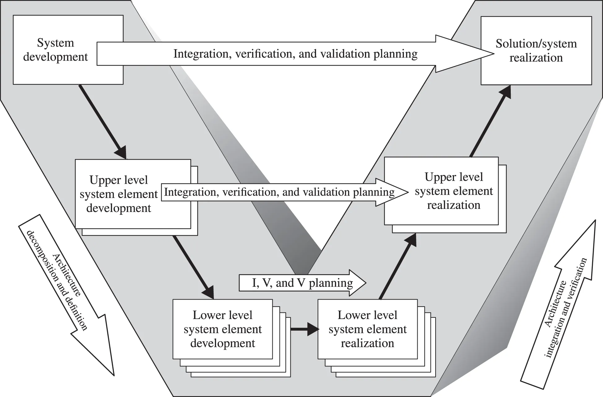{:height 464, :width 515}
- Vee Model Structure:
- Left Side (System Definition): evolving baseline (stakeholder requirements -> system requirements -> architecture -> element definition).
- Bottom: recursive application of life cycle processes or atomic element implementation.
- Right Side (System Realization): implementation, integration, verification, & validation.
- Temporal/Maturity Flow: proceeds left to right (down left, up right).
- Concurrency: life cycle processes applied concurrently, iteratively, & recursively at each hierarchy level.
- Vee Operational Elements:
- In-process Validation: ensures baselines acceptable to stakeholders.
- Change Control: formal process for post-baselining modifications.
- Recursive Iteration: SE processes iterate at each stage to ensure feasibility & support.
-
Incremental Methods
- Incremental Approach: provides initial capability followed by successive deliveries -> desired SoI.
- Goal: rapid value & responsiveness.
- Process:
- Define candidate set of increments based on requirements.
- Repeat cycles until system deployment or effort termination.
- Intermediate increments support learning.
- Application Context:
- Marketing new product versions at planned intervals.
- High technical risk environments -> enables latest technology insertion.
- Planning & Cadence:
- Establish cycle times & constant cadence.
- Synchronize w/ integration testing, evaluation, & production release.
- Minimize rework cost via experimental & empirical learning.
- Incremental Commitment Spiral Model (ICSM):
- Extension of classic Spiral Model
- Addresses requirements & solutions concurrently.
- Evaluates:
- Products & processes.
- Hardware, software, & human aspects.
- Business case (alternative configurations/investments).
- Decision Logic: progress to next spiral (increment) if risks acceptable & covered by mitigation plans.
- 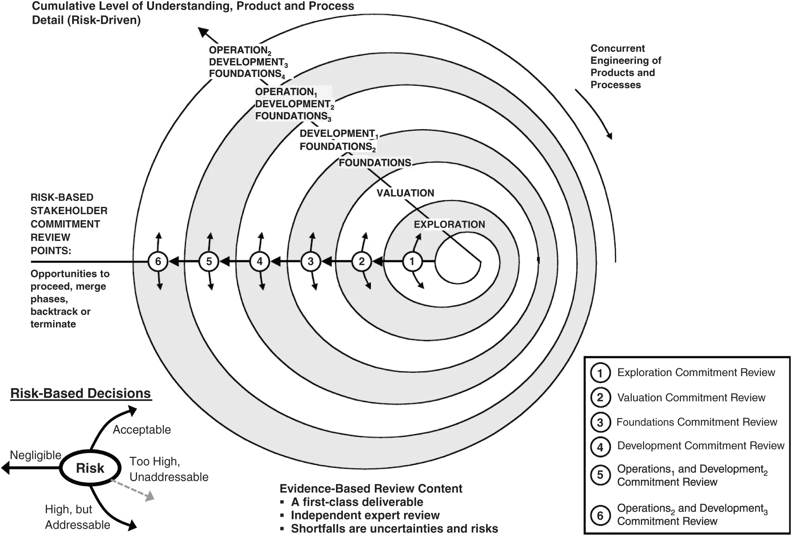{:height 562, :width 641}
-
Evolutionary Methods
- Evolutionary Approach: addresses unknown or partially known requirements in novel systems.
- Applications: Research & Development (R&D), System of Systems (SoS), Agile software, & NASA space shuttle high-temperature tiles
- Cycle Planning: regular periodic cycles -> deployable versions.
- Requirement refinement occurs w/ each cycle.
- Experience from earlier cycles -> informs subsequent cycles.
- Configuration Control: essential for simultaneous operation/support of multiple versions.
- Manages manuals, maintenance instructions, spare parts, & disposal instructions.
- Prevents confusion in capability assignment across parallel versions.
- Strategic Benefits:
- Enables steady stakeholder feedback.
- Minimal Viable Product (MVP): demonstrates feasibility & facilitates market entry.
- Allows planning for emerging technical innovations in later versions.
- Evolution Strategy:
- Decide between complete replacement vs partial/complete upgrades.
- Focus on adaptability, flexibility, & modularity during early cycles.
- Context: life cycle cost.
- DevOps: goal is continuous integration & delivery.
- Key Principles: shared ownership, workflow automation, & rapid feedback.
- DevSecOps: integrates security practices -> empowers delivery teams to select security means.
 {:height 193, :width 295}
{:height 193, :width 295}
- Mixed Approach (Rockwell Collins): combines incremental & evolutionary methods
- Asynchronous Iterations: electronic hardware increments vs firmware & software epics (versions).
- Integrated work-in-process testing w/ latest components.
- 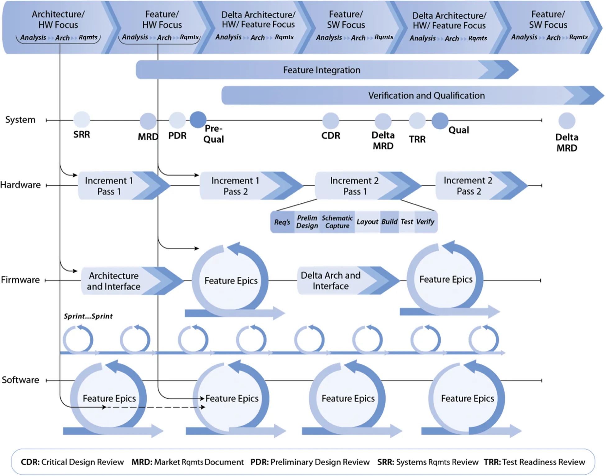{:height 401, :width 498}
- Introduction
-
System Life Cycle Processes
-
Introduction to the System Life Cycle Processes
- Process: series of activities & tasks -> achieve outcomes for stated purpose.
- SE Life Cycle Processes: enablers managing system solutions across life cycle stages.
- Application: concurrent, iterative, & recursive w/ tools & technology.
 {:height 357, :width 556}
{:height 357, :width 556}
-
Agreement Processes
- Project Initiation: identification of problem/opportunity -> development of needs -> project establishment.
- Agreement Processes: activities establishing agreement between $2$ organizations.
- Scope: focused on acquisition & supply of systems, system elements, products, or services.
- Relationship Types:
- Independent organizations.
- Organizations within same parent enterprise.
- Usage Drivers:
- Organization cannot satisfy need internally.
- Supplier provides superior economy or timeliness.
- Higher authority directs specific supplier use.
- Organization requires materials or specialized services.
- Primary Objectives:
- Identify acquirer-supplier interfaces.
- Establish terms & conditions.
- Define required inputs & provided outputs.
- Negotiation Formats:
- Formal: contract negotiation refining terms.
- Informal: intra-organizational coordination between business units.
- SE Practitioner Role: support project management during negotiations.
- Perform impact assessments for changes.
- Execute trade studies on alternatives.
- Conduct risk assessments.
- Provide technical input for decisions.
- Acceptance Criteria: negotiated during agreement processes -> protects business relationship.
- Protects acquirer from poor quality.
- Protects supplier from unpredictable acquirer actions.
- Consensus Tracking: monitor progress toward agreement in documents & clauses.
- Core Processes: Acquisition & Supply.
- Establish context & constraints for all other life cycle processes.
- Dual Roles: organization may act as supplier (to customer) & acquirer (from vendors) for same system.
- Agreement Modifications: result from change requests, deviations, waivers, or context shifts.
- Statement of Compliance: tracks agreed changes, impacted requirements, & V&V status.
-
Organizational Project-Enabling Processes
- Organizational Project-Enabling Processes: provide resources enabling projects -> meet stakeholder needs & expectations.
- Strategic Functions:
- Manage & improve organizational undertakings.
- Provision & deploy resources & assets.
- Manage risk in competitive/uncertain situations.
- Establish project environment.
- Operational Scope: focuses on system life cycle capabilities.
- Tailoring: adapts processes & interfaces -> meet strategic & tactical project objectives.
- Six Core Processes:
- Life Cycle Model Management.
- Infrastructure Management.
- Portfolio Management.
- Human Resource Management.
- Quality Management.
- Knowledge Management.
- Strategic Functions:
- Organizational Project-Enabling Processes: provide resources enabling projects -> meet stakeholder needs & expectations.
-
Technical Management Processes
- Technical Management Processes: manage resources/assets -> fulfill organization agreements.
- Technical Effort Functions:
- Plan cost, timescales, & achievements.
- Verify plan compliance & performance criteria.
- Identify & select corrective actions for progress shortfalls.
- Establish/perform technical plans.
- Manage technical team information.
- Assess progress against system product/service plans.
- Control technical tasks.
- Support decision-making.
- Technical Effort Functions:
- Eight Core Processes:
- Project Planning.
- Project Assessment and Control.
- Decision Management.
- Risk Management.
- Configuration Management.
- Information Management.
- Measurement.
- Quality Assurance.
- Process Integration:
- Consistent application throughout system life cycle.
- Collaboration w/ project management established in “shared space.”
- Professional Perspectives:
- Project Management: project start -> project end.
- Systems Engineering: system concept -> system retirement.
- Resource Application: technical & administrative resources -> plan, organize, & control engineering functions.
- Technical Management Processes: manage resources/assets -> fulfill organization agreements.
-
Technical Processes
- Introduction
 {:height 419, :width 749}
{:height 419, :width 749}- Technical Processes: define requirements, transform requirements -> product, permit reproduction, use product, provide/sustain services, & dispose of retired product.
- Coordination Function: aligns interactions between engineering specialists, other disciplines, acquirers, operators, manufacturing, & stakeholders.
- System Constraints: address capabilities within bounds of:
- Performance.
- Environment.
- External interfaces.
- Ethical norms.
- Societal expectations.
- Regulations.
- Design constraints.
- Risk Mitigation: Technical Processes reduce project failure risk.
- System Transformation: series of actions transform input artifacts -> output artifacts -> SoI addressing stakeholder needs.
- Technical Process Execution:
- Practiced concurrently, iteratively, & recursively.
- Applies to each system element within system architecture.
- Integration Process:
- Applied from project initiation.
- Manages integrated system throughout system architecture traversal.
- Addresses part interactions & macro system interactions.
- Assesses behavior & emergent properties -> Interface Management
- Verification Process: validates output artifacts vs. system requirements -> ensures transformation was “right.”
- Post-deployment Activities:
- Validation: confirms SoI meets real-world expectations.
- Verification: confirms SoI continues meeting requirements over time.
- System of Systems (SoS) Context: SoS configurations place new requirements on SoI across life cycle stages
-
Business or Mission Analysis Process
- 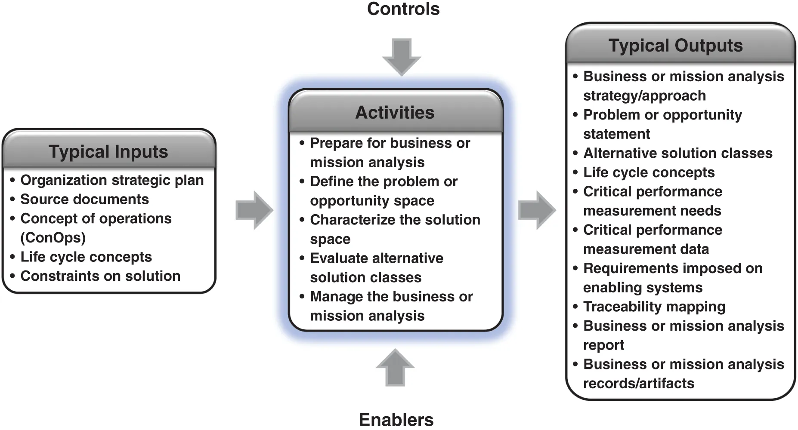{:height 257, :width 480}
- Purpose: define strategic problem/opportunity, characterize solution space, & determine potential solution class(es)
- Process Description: initiates SoI life cycle.
- Defines problem/opportunity space & identifies major stakeholders.
- Prioritizes business needs & requirements.
- Defines critical business success measures.
- Develops preliminary life cycle concepts (operations, acquisition, deployment, support, retirement).
- Evaluates alternative solution classes $\rightarrow$ selects preferred solution class.
- Preparation Activities:
- Identify problems/opportunities from organization strategy & ConOps changes.
- Detect capability gaps or deficiencies in existing systems, products, or services.
- Establish strategy/approach for analysis & solution space characterization.
- Plan/ensure access to enabling systems (IT, financial systems, security, SE tools).
- Problem/Opportunity Space Definition:
- Analyze trade-space factors: scope, drivers, constraints, risks, needs, & requirements.
- Evaluate PESTEL factors: Political, Economic, Social, Technological, Environmental, & Legal.
- Utilize external/internal analysis or SWOT (Strengths, Weaknesses, Opportunities, Threats).
- Define mission-independent goals & objectives.
- Establish Critical Business Success Measures:
- Validation criteria $\rightarrow$ critical/desired performance thresholds & objectives.
- Solution Space Characterization:
- Define preliminary life cycle concepts from business stakeholder perspective.
- Establish set of alternative solution classes spanning solution space.
- Alternative Evaluation & Selection:
- Evaluate alternatives via modeling, simulation, & analytical analysis $\rightarrow$ determine feasibility & value.
- Select preferred solution class(es) validated against strategic concepts.
- Record decisions, supporting info, rationale, & traceability.
- Major Stakeholder Identification:
- Nominate key stakeholders & establish stakeholder register.
- Authorize stakeholder budget & time for system development contribution.
- Business Needs & Requirements:
- Address capabilities, functionality, performance, security, risk, & compliance.
- Communication forms: mission statements, goals, use cases, & user stories.
- Core Life Cycle Concepts:
- Concept of Operations (ConOps): organization-level strategy achieving missions/goals.
- Describes impacts on acquiring organizations & higher-level system context.
- Operational Concept (OpsCon): user-oriented system perspective during operation.
- Defines capabilities, performance, safety, security, & external system interactions.
- Acquisition Concept: describes procurement or internal production activities (design, production, V&V).
- Deployment Concept: describes delivery, integration, & introduction into operational environment.
- Support Concept: describes logistics, infrastructure, staffing, maintenance, & training.
- Retirement Concept: describes removal, disposal (hazardous materials), legal obligations, & sustainability.
- Concept of Operations (ConOps): organization-level strategy achieving missions/goals.
- Uncertainties & Risk:
- Sources: stakeholder perspectives, market, technical performance, cost, & sustainability.
- Mitigation: utilize Risk Management process in conjunction w/ Technical Processes.
-
Stakeholder Needs and Requirements Definition Process
 {:height 314, :width 494}
{:height 314, :width 494}- Purpose: define stakeholder needs & requirements providing capabilities in defined environment
- Process Focus: elaborate life cycle concepts -> transform to stakeholder needs -> transform to stakeholder requirements.
- Driven by business needs, business requirements, & success measures from Business/Mission Analysis.
- Stakeholder Requirement Functions:
- Govern SoI development.
- Define project scope & acceptance criteria.
- Provide basis for technical description in agreements (deliverables & interfaces).
- Process Preparation:
- Identify stakeholders w/ legitimate interest & resolve conflicts.
- Establish strategy for stakeholder management & definition approach.
- Plan enabling systems/services (elicitation tools, analysis software, traceability databases).
- Life Cycle Concept Development:
- Elaborate OpsCon & ConOps within preferred solution class context.
- Define operational scenarios & use cases -> identify required capabilities & behaviors.
- Characterize intended operational environment, user interactions, & external interface boundaries.
- Identify solution constraints & risks (misuse & loss scenarios).
- Stakeholder Needs Definition:
- Identify needs reflecting concepts & constraints (quality, safety, security, environment).
- Prioritize/select essential needs via Decision Management & System Analysis.
- Record needs w/ sources & rationale.
- Transform concepts -> integrated set of agreed-to needs.
- Requirements Transformation:
- Transform needs -> stakeholder requirements (technical/formal).
- Address safety, security, sustainability, & human systems integration.
- Ensure high quality characteristics: necessary, singular, correct, unambiguous, feasible, complete, & conforming.
- Needs & Requirements Analysis:
- Define critical performance measures & quality characteristics -> enable technical monitoring.
- Establish system validation criteria, methods, & strategies.
- Review requirements w/ stakeholders -> resolve conflicts, inconsistencies, or impracticalities.
- Process Management:
- Obtain explicit agreement on artifacts.
- Maintain traceability across life cycle concepts, needs, & requirements.
- Provide artifacts to Configuration Management (CM) for baselining.
- Stakeholder Identification Details:
- Includes: customers, users, operators, maintainers, procurement, regulators, developers, & verifiers.
- Includes: external/enabling system stakeholders & future generations (represented by agents).
- Address detractors via Risk Management, threat analysis, & resilience requirements.
- Elicitation & Refinement:
- Reconcile disparate/conflicting stakeholder views -> horizontal integration.
- Mitigate cognitive biases (role, education, culture) during elicitation.
- Define constraints, drivers (competition, threats), & risks.
- Life Cycle Concept Objectives:
- Ensure clear understanding of needs & rationale.
- Establish holistic capability understanding (people, process, products).
- Form basis for design, system verification, & validation planning.
- Assess SoI interactions w/ external systems & intended environment.
- Uncertainties & Risk Sources:
- Business & market factors.
- Technical performance & schedule.
- Development, production, operations, & support costs.
- Security & sustainability.
-
System Requirements Definition Process
collapsed:: true
- Purpose: transform stakeholder/user-oriented view of desired capabilities -> technical view of solution meeting operational needs.
- Description:
- Foundational for Architecture, Design, Integration, & Verification.
- Aim for minimum necessary & sufficient requirement set to realize intent.
- Uncertainty managed until requirements mature; late changes impact cost/schedule.
- Process Dynamics:
- Concurrent & iterative w/ Stakeholder Needs & System Architecture Definition.
- Recursive application down system hierarchy layers.
- Allocation occurs concurrently w/ architecture definition.
- Requirements must be traceable, consistent, & free of implementation bias.
- Preparation Activities:
- Establish strategy & plan enabling systems (elicitation tools, risk databases, traceability software).
- Requirement Definition:
- Define functional boundary (behavior & properties).
- Transform stakeholder requirements -> system functions & performance levels.
- Include primary & enabling functions.
- Define constraints: high-level requirements, operational conditions, & external interactions.
- Address risks, criticality, quality characteristics, & compliance.
- Define Verification Success Criteria: strategy, method, & responsible organization.
- Requirement Analysis:
- Evaluate individual requirements & sets (increments/sprints).
- Ensure characteristics: correct, complete, consistent, comprehensible, appropriate to level, & feasible.
- Define critical performance measures -> technical achievement monitoring.
- Resolve inconsistencies & impracticalities via stakeholder negotiation.
- Process Management:
- Confirm agreement & capture decisions/rationale/alternatives.
- Sustain traceability & manage changes.
- Provide artifacts to Configuration Management (CM) for baselining.
- Stakeholder vs. System Requirements:
- Stakeholder: user-oriented; focuses on high-priority/critical functions & quality.
- System: technical perspective; includes detailed enabling functions & compliance for implementation.
- Supplier Obligations:
- Assessment for derived requirements from “non-acquirer” stakeholders (production, test, safety, regulatory).
- Prevents system validation failure due to blind adherence to contract requirements.
- Transformation Complexity:
- Involves function/performance analysis, trade studies, & risk/technology assessments.
- Balances “top-down” (allocation, derivation, flow-down) w/ “bottom-up” (compliance, flow-up).
- Requirements serve as “design-to” or “design input” requirements.
-
Requirement Statement Characteristics:
Requirement Statement Characteristic Definition Necessary The requirement statement defines a capability, characteristic, constraint, or quality factor needed to satisfy a life cycle concept, need, source, or parent requirement. Appropriate The specific intent and amount of detail of the requirement statement is appropriate to the level (e.g., the level of abstraction, organization, or system architecture) of the entity to which it refers. Unambiguous The requirement statement is stated such that the intent is clear and the requirement can be interpreted in only one way by all the intended stakeholders. Complete The requirement statement sufficiently describes the necessary capability, characteristic, constraint, conditions, or quality factor to meet the need, source, or higher-level requirement from which it was transformed. Singular The requirement statement states a single capability, characteristic, constraint, or quality factor. Feasible The requirement statement can be realized within entity constraints (e.g., cost, schedule, technical, legal, ethical, safety) with acceptable risk. Verifiable The requirement statement is structured and worded such that its realization can be verified to the approving authority’s satisfaction. Correct The requirement statement is an accurate representation of the need, source, or higher-level requirement from which it was transformed. Conforming The requirement statement conforms to an approved standard pattern and style guide or standard for writing and managing requirements. -
Requirement Set Characteristics:
Requirement Set Characteristic Definition Complete The requirement set for a given SOI should stand alone such that it sufficiently describes the necessary capabilities, characteristics, functionality, performance, drivers, constraints, conditions, interactions, standards, regulations, and/or quality characteristics without requiring other sets of requirements at the appropriate level of abstraction. Consistent The requirement set contains individual requirements that are unique, do not conflict with or overlap with others in the set, and the units and measurement systems they use are homogeneous. The language used within the sets is consistent (i.e., the same words are used throughout the set to mean the same thing). All terms used within the requirement statements are consistent with the architectural model, project glossary, and project data dictionary. Feasible The requirement set can be realized within entity constraints (e.g., cost, schedule, technical) with acceptable risk. Comprehensible The requirement set is written such that it is clear as to what is expected of the entity and its relation to the macro system of which it is a part. Able to be validated The requirement set will lead to the achievement of the set of needs and higher-level requirements within the constraints (such as cost, schedule, technical, and regulatory compliance) with acceptable risk. Correct The requirement set is an accurate representation of the needs, sources, or higher-level requirements from which it was transformed. - Requirement Attributes (Table 2.9):
- Core Attributes: Rationale, Trace to Parent/Source, Allocation/Budgeting, Success Criteria, Strategy, Method, Responsible Org, Unique ID, Author, Owner, Status (V&V), Priority, Criticality, & Risk.
- Allocation & Flow-down:
- Allocate requirements to next-level system elements.
- Repeat recursively until elements reach make/buy/reuse level.
- Forms Allocated Baseline of the SoI.
- Requirements Management:
- Record/maintain evolving requirements, context, & history
- Define, control, & publish baseline requirements for all SoI levels.
- Establish traceability & performance measures.
-
System Architecture Definition Process
 {:height 403, :width 508}
{:height 403, :width 508}- System Architecture Definition Purpose: generate alternatives, select option addressing stakeholder concerns & system requirements, & express via consistent views & models
- Process Transformations: converts strategic architectures, policies, life cycle concepts, & requirements $\rightarrow$ fundamental system concepts, properties, & governing principles.
- Applicable Standards:
- ISO 15704: addresses stakeholder concerns & incremental change for enterprises.
- ISO/IEC/IEEE 42000 Series: establishes architecture conceptualization, evaluation, & description processes.
- System Architecture Characteristics:
- Defines high-level structure & intended properties.
- Balances suitability, viability, effectiveness, & affordability.
- Incorporates emergent properties & behaviors.
- Iterative & recursive across system levels.
- Preparation Activities:
- Analyze market, industry, legal, & stakeholder perspectives.
- Define System Context & boundary w/ System Requirements Definition.
- Establish strategy: architecture roadmap, frameworks, patterns, & modeling techniques.
- Provision enabling items: registry, repository, library, & competencies.
- Select Architecture Viewpoints & model kinds.
- Architecture Conceptualization:
- Characterize problem space & define success criteria.
- Synthesize potential solutions via technology scans & solution patterns.
- Identify strengths, weaknesses, gaps, & required trade-offs.
- Formulate candidate architectures:
- Functions.
- Input/output flows.
- States & modes.
- Functional & physical interfaces.
- Nodes & links.
- Architecture Evaluation:
- Determine objectives based on mandates, value, & quality characteristics.
- Collect views, models, & metrics; qualify accuracy & uncertainty.
- Assess alternatives via System Analysis & Measurement.
- Eliminate alternatives failing mandates; select preferred architecture solution.
- Architecture Elaboration:
- Develop models addressing stakeholder concerns & architecture frameworks.
- Define internal & external interfaces.
- Resolve inconsistencies using correspondence rules.
- Verify & validate models via execution, simulation, or prototypes.
- Compose views & models $\rightarrow$ Architecture Description.
- 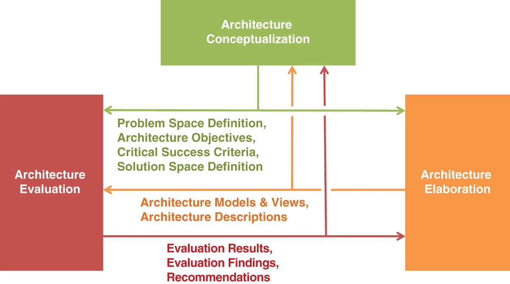{:height 308, :width 455}
- Process Management:
- Record rationale for alternatives & decisions.
- Govern architecture via roles, responsibilities, & authorities.
- Maintain bi-directional traceability: requirements $\leftrightarrow$ architectural entities.
- Monitor architecting effectiveness & resource allocation.
- Architecture vs. Design:
- Architecture: focuses on essential concepts, structure, & emergent behavior; design-agnostic for flexibility.
- Design Definition: develops detail for realization; provides feedback for allocation alignment.
- Architecting Styles:
- Authoritative.
- Directive.
- Coordinative.
- Supportive.
- Architecture Patterns: reusable, configurable entities; promote communication & streamline documentation.
- Value-Based Approach: understands stakeholder value systems & boundaries $\rightarrow$ prevents value degradation.
- Interfaces: fundamental functional aspects (inputs/outputs); standards ensure interoperability & reduce integration challenges.
- System Architecture Integration:
- Horizontal: maintains operational & development interfaces.
- Vertical: accounts for allocated requirements as design matures.
- Manages interdependencies between functional & physical elements.
-
Design Definition Process
- 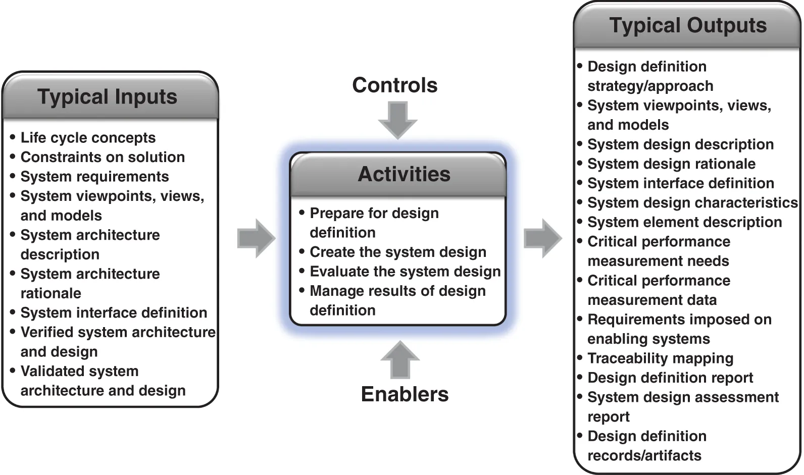{:height 317, :width 523}
- Purpose: provide detailed data & information about system & elements -> realize solution per requirements & architecture
- Description: transforms architecture & requirements -> design for implementation.
- Defines properties & characteristics allocated to each system element.
- Ensures alignment w/ design guidelines & organizational standards.
- Preparation Activities:
- Determine design drivers, strategy, & applicable approaches.
- Factors: personnel (human factors), processes, products, & services.
- Identify technologies & system characteristic categories (quality models).
- Examine architecture for governing principles & evolution.
- Provision enabling elements, services, & resources.
- Design Creation:
- Assess alternatives: adapt existing, compose from available, or create new.
- Allocate system requirements -> system elements.
- Transform architectural entities & relationships -> design elements.
- Transform architectural characteristics -> design characteristics (functionality, behavior, materials, data structures).
- Synthesis techniques: brainstorming, analogical thinking, & morphological charts.
- Analysis techniques: parametric design & trade-off analysis.
- Refine interfaces between system elements & external entities.
- System Design Description: captures composition, properties, & characteristics -> forms specification for procurement/realization.
- Design Evaluation:
- Determine suitability & “goodness” vs needs, requirements, & constraints.
- Ensure consistency w/ architecture description.
- Assess stakeholder value & potential negative consequences.
- Select preferred design -> provide feedback to Architecture Definition & Verification processes.
- Process Management:
- Maintain bidirectional traceability: requirements/constraints <-> design characteristics/architecture entities.
- Record rationale for alternatives & decisions.
- Manage configuration & changes.
- Certification: qualify design vs quality standards (critical systems).
- Registration: protect intellectual property (IP).
- System Design Authority: maintains design integrity during development & evolution.
- Conduct design reviews -> evaluate progress, suitability, & quality.
- Design vs. Architecture:
- Architecture: essential concepts, structure, & behaviors; design-agnostic.
- Design: detail for realization; includes materials, coding, & manufacture.
- Design Thinking: focuses on reasoning, concept development, & realization -> complements Systems Thinking.
- Design Drivers: factors heavily influencing design (market, human factors, safety, security).
- Functional requirements often dominate.
- Non-functional attributes (safety, security, performance) dominate critical systems (e.g., propulsion).
- Design For X (DFX): addresses specific drivers like Testability (DFT) or Manufacturability (DFM).
- Design Assurance:
- Stringent practices for high integrity/dependability.
- Certification: ensures compliance w/ airworthiness, nuclear, or safety regulations.
- Design Descriptors: set of characteristics + possible values.
- Determined via top-down apportionment & bottom-up selection.
- SE-specific Examples: Quality of service, modularity, openness, autonomy.
- Hardware Examples: Mass, power, volume, thermal.
- Software Examples: Correctness, efficiency, maintainability.
- Data/Information Examples: Accuracy, relevance, timeliness.
- Validation & Integrity:
- Modeling, simulation, & prototyping (AR/VR) discover early problems.
- Integrity ensures completeness, consistency, & quality characteristics.
- Design Evolution:
- Maturity stages: Conceptual -> Preliminary (embodiment) -> Detailed.
- Drivers for change: new technology, obsolescence, performance, or threats.
- SoS Environment: requires continuous evolution, robustness, & resilience.
-
System Analysis Process
- Taxonomy of system analysis dimensions
- 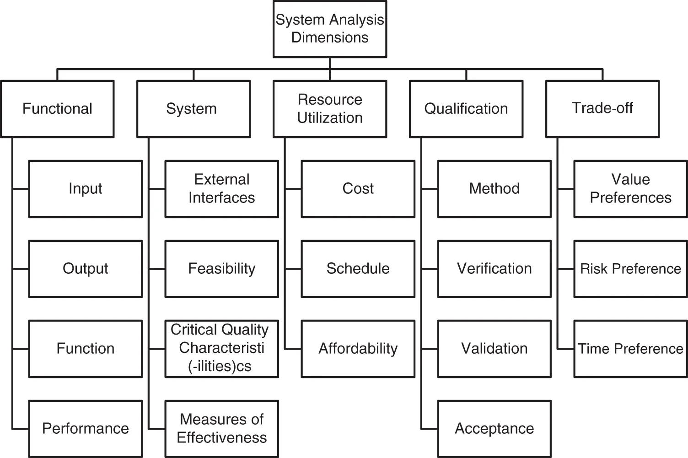{:height 340, :width 499}
- 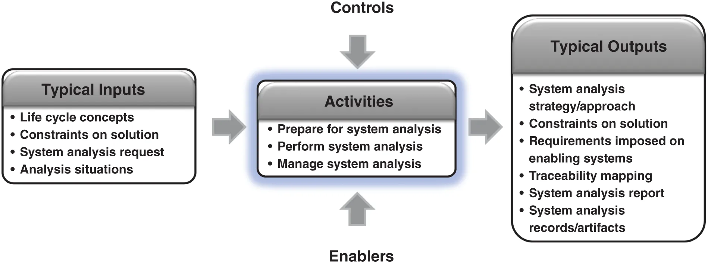{:height 201, :width 557}
- System Analysis Purpose: provide rigorous data/info for technical understanding -> aid decision-making & technical assessments
- Analysis Definition: detailed examination determining nature, structure, or essential features
- Utilizes models & simulations -> assess utility & integrity of system requirements, architecture, & design.
- Model Categories: incomplete representations answering four question types:
- Descriptive: what has happened?
- Predictive: what could happen?
- Prescriptive: what should we do?
- Definitive: how should an entity be defined?
- System Variables: quantitative (numerical) & qualitative (categorical) attributes.
- Establishing relationships -> represents emergent features.
- Addresses complexity, uncertainty, dynamic behavior, & feedback loops.
- Modeling Approaches:
- MBSE: functional, structural, & behavioral modeling
- Mathematical analysis.
- Probabilistic & statistical modeling.
- Simulation.
- Sensitivity analysis: evaluates allowable variable range across life cycle stages.
- Preparation Activities:
- Establish strategy & identify situation (problem, opportunity, or decision).
- Define scope, objectives, & fidelity level.
- Choose methods based on time, cost, fidelity, & criticality.
- Plan enabling systems & validate assumptions.
- Collect trustworthy data & establish criteria for data quality/validity.
- Analysis Execution:
- Perform required analysis, uncertainty analysis, & sensitivity analysis.
- Verify results for quality & validity.
- Interpret results -> develop conclusions & recommendations.
- Capture results in System Analysis Report.
- Analysis Management:
- Sustain traceability of results.
- Provide information items/work products to Configuration Management (CM) for baselining.
- Common Tips:
- Ensure parameters/data inputs match model operation field.
- Evolve models via parameter modifications & new tools.
- Use multiple concurrent model types -> compare results across properties.
- Contextualize results w/ tools used, assumptions, parameters, data, & output variance.
- Process Relationships:
- Business/Mission Analysis (BMA): estimates OpsCon/business model effectiveness, feasibility, cost, & value.
- SNRD & SRD: resolves requirement conflicts regarding functionality, feasibility, & performance.
- Arch/Design: evaluates design space for dependability, affordability, maintenance, & human-system interface.
- Verification & Validation (V&V): quantifies cost, schedule, & information value for V&V methods (inspection, analysis, demo, test).
- Planning & Control: provides estimates & uncertainty ranges for technical measures (MOE, MOP, TPM).
- Decision Management Integration: analysis provides data for selecting alternatives based on value, risk, & time preferences.
- Cost Analysis: evaluates Life Cycle Costs (LCC).
- Includes labor/non-labor items: development, manufacturing, sales, utilization, maintenance, & disposal.
- Technical Risk Analysis: quantifies probability & impact of operational system risks.
- Effectiveness Analysis: assesses degree system meets criteria (TPM, MOP, MOE) in intended environment.
- Evaluates probability of meeting success thresholds.
- Taxonomy of system analysis dimensions
-
Implementation Process
- 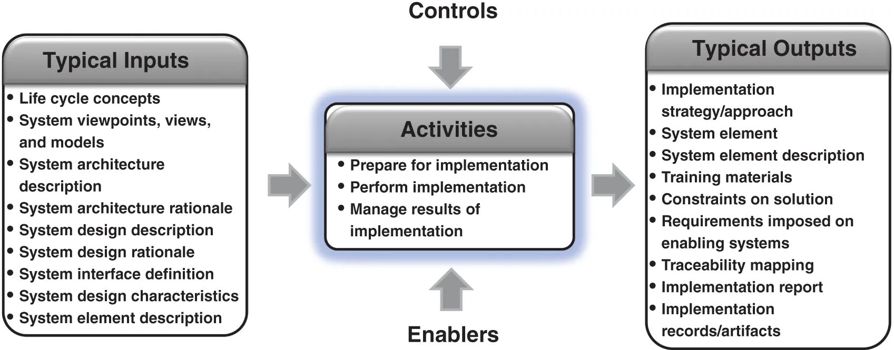{:height 235, :width 592}
- Purpose: realize a specified system element
- Description: creates system element per its description (requirements, architecture, design, interfaces).
- Occurs across life cycle stages (e.g., defining/upgrading supporting infrastructure).
- Verifies system element requirements & validates stakeholder requirements.
- Corrects discrepancies via iterative/recursive interaction w/ preceding processes.
- Preparation Activities:
- Define procedures (fabrication/coding), tools, tolerances, & configuration audit criteria.
- Elicit constraints from stakeholders/developers regarding technology & strategy.
- Document resource acquisition plan & identify enabling system interfaces.
- Ensure access to enabling services, resources, & materials.
- Schedule process & identify critical path elements.
- Implementation Execution:
- Realize elements per product, process, & material specifications.
- Compliance Evidence:
- Complete specifications & system configurations.
- Conduct peer reviews, inspections, & functional testing.
- Conduct conformation audits vs. drawings/design artifacts before integration.
- Prepare training capability & draft documentation (operation, failure detection, maintenance).
- Create hazardous materials log (if applicable).
- Process Management:
- Record results & provide baseline info to Configuration Management (CM).
- Resolve anomalies (corrective actions/improvements) via Quality Assurance.
- Sustain traceability with architecture, design, & requirements.
- Common Tips:
- Engage Integrated Product Development Teams (IPDT) for configuration/redesign issues.
- Use proactive inspections to build quality
- Perform conformation audits & software configuration verification before Transition.
- Identify enabling systems/materials early to manage lead times.
- System Element Forms:
- Hardware: fabricated or adapted physical elements.
- Software: code & executable images.
- Operational Resources: procedures & training.
- Services: specified outcomes from hardware, software, or operational elements.
- Implementation Methods:
- Creation: fabrication or development.
- Adaptation: modifies reused or acquired elements (COTS) via configuration settings (switches, tables).
-
Integration Process
 {:height 241, :width 545}
{:height 241, :width 545}- Purpose: synthesize system elements -> realized system satisfying requirements
- Process Focus: combine hardware, software, & operational resources.
- Verify static & dynamic interface correctness.
- Execute proactive activities: modeling, analysis, simulation, prototyping, & early testing.
- System Definition Interaction: early coordination w/ Requirements, Architecture, & Design Definition -> prevents realization issues.
- V&V Relationship:
- Iterates w/ Verification & Validation processes.
- Verification: checks requirements, architecture, & design implementation.
- Validation: checks elements meet stakeholder requirements & intended function.
- Boundary Checks: verify physical, logical, & human-system interfaces (functional, sensory, cognitive).
- Preparation Activities:
- Establish checkpoints for progressive aggregation.
- Define strategy/approach: risk mitigation & aggregation sequences.
- Identify constraints: accessibility, integrator safety, & enabler interfaces.
- Plan/ensure enabling systems: facilities, training systems, & simulators.
- Integration Execution:
- Aggregate system element configurations per planned sequence.
- Track interface availability & conformance to requirements.
- Verify interfaces, functions, & critical quality characteristics at multiple levels.
- Process Management:
- Capture results & anomalies (execution errors or definition inconsistencies).
- Identify root causes via Project Assessment & Control -> direct corrective actions.
- Maintain bidirectional traceability & provide artifacts to Configuration Management (CM).
- Implementation Aggregate: collection of system elements & interfaces.
- Verification Configuration: includes aggregate + enabling systems (simulators, emulators, stubs, scaffolding, activators).
- Integration Techniques:
- Global (Big Bang): integrates entire SoI; for low-risk or simple systems.
- Bottom-up: follows reverse decomposition; isolates faults easily.
- Top-down: integrates system-level/performance-critical elements first using simulators.
- Incremental: adds small number of elements to existing integrated increments.
- Subset: assembles functional chains or threads before final assembly.
- Criterion-driven: prioritizes critical elements (dependability, complexity, innovation).
- With the stream: assembles elements as they become available.
- Model-based: integrates within model environment; inserts physical elements as developed.
- Risk Mitigation Management: use Integrated Product Teams (IPTs), Interface Control Working Groups (ICWGs), SE Integration Teams (SEITs), & Technical Performance Measures (TPMs).
- Hierarchical Integration:
- Horizontal: spans common hierarchy levels (structural & behavioral aspects).
- Vertical: ensures element consistency across hierarchy levels.
- Recursive Nature: shares new info/learning between higher & lower levels.
-
Verification Process
 {:height 270, :width 530}
{:height 270, :width 530}- Purpose: provide objective evidence that a system, system element, or artifact fulfills specified requirements & characteristics
- Description: confirms artifact/entity is “made right.”
- No anomalies (errors/defects/faults) introduced during transformation.
- Verification strategy/method yields evidence for detection of potential anomalies.
- Confirms fulfillment w/ acceptable degree of confidence.
- Preparation Activities:
- Define scope (stakeholder needs, requirements, models, design, system elements, integrated SoI).
- Identify specified requirements for each entity.
- Capture constraints: contractual, regulatory, cost, schedule, safety, & physical laws.
- Select verification methods (inspection, analysis, demonstration, test) & success criteria.
- Establish strategy: trade-offs between scope & constraints.
- Plan/ensure enabling systems: equipment, simulators, emulators, test beds, & facilities.
- Verification Performance:
- Define procedures (individual or sets of actions).
- Schedule procedures as project milestones.
- Ensure readiness: availability of system/entity, enablers, & qualified personnel.
- Execute verification procedures.
- Process Management:
- Record results & defects in reports/records.
- Analyze results vs success criteria -> determine conformance.
- Capture & track operational incidents via Project Assessment & Control & CM.
- Obtain agreement from approval authority on passing criteria.
- Maintain bidirectional traceability between verified entity & requirements/design characteristics.
- Provide artifacts to Configuration Management (CM) for baselining.
- Verification Planning: should begin concurrently w/ system requirements definition.
- Early strategy approval by acquirer maximizes resourcing chances.
- Risk-Based Reduction: if activities must be reduced, use risk-based assessment rather than blind budget cuts.
- Verification Action Components:
- Submitted entity.
- Reference item (requirement/standard).
- Expected result (success criteria).
- Strategy & method.
- Integration level.
- Common Verification Actions:
- Requirement Verification: checks transformation correctness & statement quality.
- Model/Simulation Verification: checks vs requirements, syntax rules, & heuristics.
- Architecture Verification: ensures design will pass system verification & follows definition techniques.
- Design Verification: confirms design characteristics meet system requirements & trade rules.
- System Verification: confirms realized system/element meets system requirements & design characteristics.
- Verification per level
 {:height 349, :width 472}
{:height 349, :width 472}
- Verification Methods:
- Inspection: visual/sensory examination (color, weight).
- Analysis: analytical data or simulations (modeling, similarity).
- Similarity: transfer status from similar design/manufacture/environment.
- Demonstration: qualitative functional performance w/ minimal equipment (supplier-selected stimuli).
- Test: quantitative verification under controlled real/simulated conditions using instrumentation.
- Verification per Level: executed recursively at each hierarchical layer during integration.
- Elements must pass verification before integration into next higher level.
- Early Verification (MBSE): reduces discovery of anomalies during final integration/testing.
- Caution: do not substitute realized system verification w/ models unless necessary; actual system validation remains definitive.
- Program Management: monitor status, anomalies, & noncompliances -> manage budget, schedule, & risk.
-
Transition Process
 {:height 208, :width 500}
{:height 208, :width 500}- Purpose: establish capability for system to provide specified services in operational environment
- Description: installs SoI into operational & maintenance environment.
- Integrates SoI into organization systems, business processes, & capabilities.
- Coordinates w/ V&V, operation, maintenance, & disposal activities.
- Identifies requirement/design gaps & drives changes/augmentations.
- Preparation Activities:
- Analyze intended environment: physical sites, IT infrastructure, organizational structure, & processes.
- Identify environmental changes to accommodate system.
- Obtain enabling systems, controls, products, or services.
- Coordinate SoI development w/ environment modifications.
- Define transition team structure, budget, & schedule.
- Establish mitigation strategies: downtime risk, roll-back procedures, & “point-of-no-return.”
- Develop deployment, service activation, & site validation procedures.
- Staff & train collaborative transition teams.
- Transition Performance:
- Deploy system to operation, support, & maintenance sites.
- Utilize integration & verification processes for local configurations.
- Establish capabilities for adaptation, integration w/ other systems, performance monitoring, & problem correction.
- Train personnel & hand off operator/maintenance/support manuals.
- Provide as-built information to Configuration Management (CM).
- Activate/commission services & ensure expected performance.
- Verify installation resolution of all issues/action items.
- Facilitate contractual acceptance & transfer of control/ownership/custody.
- Process Management:
- Capture incidents, problems, & anomalies; investigate & perform corrective actions.
- Utilize Quality Assurance for problem resolution.
- Incorporate experience -> improve future transition instances.
- Maintain bidirectional traceability between transitioned elements & requirements/architecture.
- Transition Concepts:
- Applies to SoI going into service & system elements being integrated into larger elements.
- Transfers system from development (“system-in-the-lab”) to utilization (“system-in-the-field”).
- Contextual Considerations:
- Greenfield (Clean Sheet): transition into newly created organizations/systems.
- Brownfield (Legacy): transition into existing environments; requires effort to manage disruption
- Provisional Operation (Burn-in): detection of failures & reliability improvement via operation in real/simulated environments.
- Often exceeds expected environmental ranges (heat, vibration, power).
- Concurrent w/ Operation process.
- Warranty Period: may delay maintenance responsibility transfer; concurrent w/ Maintenance process.
-
Validation Process
 {:height 279, :width 483}
{:height 279, :width 483}- Validation Purpose: provide objective evidence system fulfills business/mission objectives & stakeholder needs in intended environment
- Process Scope: applies to engineering artifacts, entities, & info (needs, requirements, models, architecture, design, & realized SoI).
- Confirmation Goals:
- Build “right” artifact per stakeholder needs.
- Realize SoI for intended use in operational environment by intended users.
- Prevent negative impact from unintended users or usage.
- Validation vs Verification:
- Validation: ensures “right system built.”
- Verification: ensures “system built right.”
- Preparation Activities:
- Define scope & validation actions (strategy, method, success criteria).
- Identify stakeholder needs & requirements for validation comparison.
- Capture constraints: contractual, regulatory, fiscal, schedule, physical laws, & accessibility.
- Select methods: inspection, analysis, demonstration, or test.
- Define success criteria -> result in objective evidence of fulfillment.
- Establish strategy w/ stakeholder & approval authority agreement.
- Plan/ensure enabling systems: simulators, emulators, test beds, & facilities.
- Validation Execution:
- Define procedures & schedule events as project commitments.
- Perform integrated SoI validation in actual operational environment w/ intended users or surrogates.
- Verify readiness: configuration status, enabler availability, & qualified personnel.
- Results Management:
- Record results & defects in validation reports.
- Analyze vs success criteria -> determine conformance confidence.
- Track operational incidents via Project Assessment & Control & Configuration Management.
- Resolve definition changes via other Technical Processes.
- Obtain authorized approval authority agreement for acceptance.
- Maintain bidirectional traceability (entity <-> artifacts <-> needs/requirements).
- Provide baseline candidates to Configuration Management.
- Planning & Strategy:
- Initiate planning during stakeholder needs & requirements definition.
- Maximize resourcing potential via early cost/schedule estimates.
- Involve broad range of stakeholders (end users, operators).
- revealing effects on enabling, interfacing, & interoperating systems.
- Scenario Testing:
- Utilize scenarios & use cases for nominal, off-nominal, alternate, misuse, & loss cases.
- Principle: “test as you fly, fly as you test.”
- Risk-Based Approach:
- Avoid blind reduction of validation activities due to budget/schedule.
- Gaps at final acceptance/regulatory submission -> high cost/time rework.
- Validation per level
- 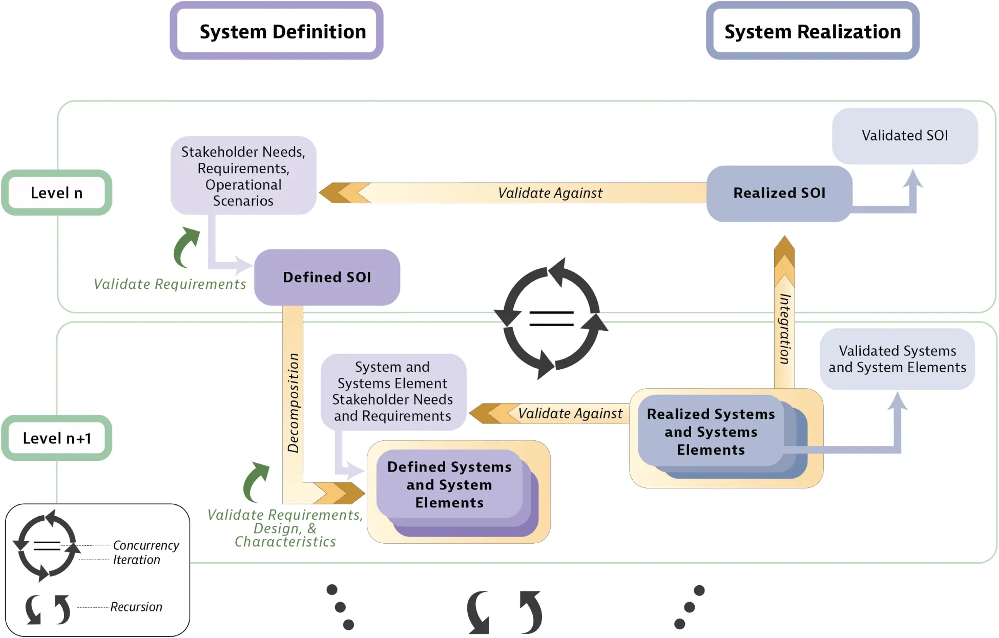{:height 349, :width 490}
- Specific Validation Actions:
- Requirement Validation: ensures right requirement accurately communicates need in stakeholder language.
- Model/Simulation Validation: confirms accurate reflection of intended behavior & purpose.
- Architecture/Design Validation: confirms design characteristics result in SoI meeting needs.
- SoI Validation: confirms purpose fulfillment & security vs unintended users w/ acceptable confidence.
- Validation Outcomes:
- Acceptance: acquirer decision prior to transition.
- Certification: written assurance vs legal/industrial standards (e.g., CE, UL).
- Readiness for Use: assessment at first article, production completion, or post-maintenance.
- Qualification: demonstration that realized system properties & margins meet all requirements.
- Hierarchy & Levels:
- Recursive execution across hierarchical architecture layers.
- Elements pass validation before integration into next higher level.
- Early Validation (MBSE):
- Provides early feedback & expectation management.
- Reduces rework risk prior to physical realization.
- Constraint: physical realm assessment remains definitive due to emergent properties & interaction complexity.
- Program Monitoring: track status, anomalies, & noncompliances -> manage budget, schedule, & risk.
-
Operation Process
- 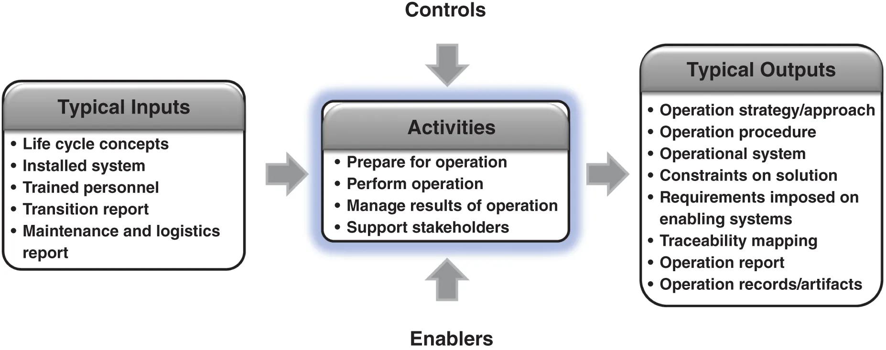{:height 222, :width 495}
- Purpose: use system -> deliver services.
- Description: delivers services for benefit of operating organization.
- Concurrent w/ Maintenance Process.
- SoI functions as integral part of organization.
- Contributes to Business or Mission Analysis Process.
- Identifies requirements & design gaps -> drives changes/augmentations.
- Preparation Activities:
- Influence Concept of Operations (ConOps) & Operational Concept (OpsCon).
- Identify regulations, legal requirements, & environmental/ethical constraints.
- Define business rules for sustaining/enhancing services.
- Plan operational capability build-up:
- Confirm site deployment schedules.
- Personnel availability & training.
- Logistic support availability.
- Obtain enabling systems, controls, products, or services.
- Verify SoI info products (documentation, manuals, procedures).
- Review transition, validation, & maintenance strategies for OpsCon compatibility.
- Operational Performance:
- Confirm transition completion at operational sites.
- Prepare & verify system configurations for specific missions.
- Execute established procedures -> update via experience.
- Manage SoI flows (materials, energy, info) & monitor input/output systems.
- Track performance & operational availability.
- Identify, investigate, & correct problems/anomalies.
- Conduct planned contingency actions during abnormal conditions.
- Results Management:
- Capture/investigate incidents & anomalies -> perform corrective actions.
- Use Quality Assurance Process for problem resolution.
- Apply operational experience -> improvements.
- Maintain bidirectional traceability: assets/services <-> architecture/design/requirements.
- Stakeholder Support:
- Supplier supports customer throughout life cycle.
- Leverage knowledge generated by customer & supplier.
- Operational Concepts:
- Represents ultimate SE goal.
- Needs/requirements provide source for system requirements & V&V inputs.
- SoI interfaces w/ external systems -> requires life cycle coordination.
- Environmental evolution during development -> requires updated life cycle concepts & requirements.
-
Maintenance Process
- 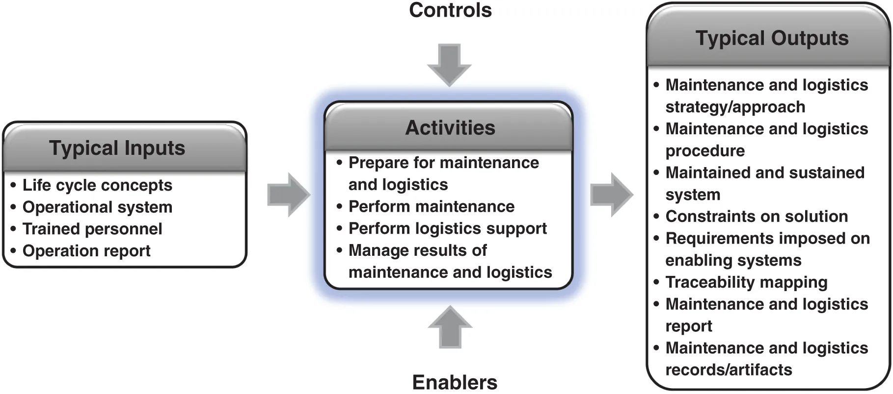{:height 240, :width 484}
- Maintenance Purpose: sustain system capability -> provide service.
- Process Focus: sustains services for operating organization.
- Concurrent w/ Operation Process.
- Includes: operations support, logistics, & material management.
- Identifies requirements/design gaps -> drives SoI changes & requirement augmentation.
- Preparation Activities:
- Define/maintain maintenance & logistics strategies.
- Establish business rules for sustaining/enhancing services.
- Identify regulations, legal requirements, & ethical constraints.
- Plan capability build-up: site schedules, personnel availability, & training.
- Establish warranties, licenses (software/legal), & support communication lines.
- Obtain enabling systems, controls, products, & services.
- Review transition, validation, & operation strategies for support concept compatibility.
- Maintenance Performance:
- Confirm transition completion at maintenance sites.
- Execute established procedures -> update via experience.
- Repair physical/logical damage (e.g., data corruption/inaccessibility).
- Replace faulty/obsolete parts & apply software updates.
- Monitor SoI & environment -> detect/predict failures or performance degradation.
- Prevent disruptions via scheduled repairs based on history/prediction.
- Ensure material/part availability via production, acquisition, or repair.
- Track repairs -> analyze trends for warranty claims or new project needs.
- Logistic Support: conduct acquisition & operational logistics actions.
- Results Management:
- Capture/investigate incidents & anomalies -> execute corrective actions.
- Utilize Quality Assurance Process for problem resolution.
- Apply experience -> improvements.
- Maintain bidirectional traceability: assets/services <-> architecture/design/requirements.
- Manage configuration data items.
- Strategy Coordination:
- Identify enabling systems/materials early -> manage lead times.
- Coordinate SoI maintenance w/ interoperating & enabling systems.
- Trigger maintenance actions across systems due to technical or organizational concerns.
- System Integration:
- Integrate activities into existing support/logistics networks.
- Sustain personnel skills & competencies for operation & maintenance.
- Maintenance Modes:
- Corrective: restores normal operation (e.g., hardware replacement, software patches).
- Preventive: schedules routine actions -> prevents failures & sustains performance.
- Predictive: utilizes operational data -> predicts failures & schedules advance maintenance.
- System Modification: changes system -> sustains existing capabilities in changing environments.
- Upgrades: adds new capabilities to extend useful life.
-
Disposal Process
 {:height 251, :width 529}
{:height 251, :width 529}- Purpose: end system existence for intended use.
- Handle replaced/retired elements & waste products.
- Attend to critical disposal needs.
- Comply w/ guidance, policy, regulations, & statutes.
- Description: generates requirements/constraints for design consideration.
- Considers material reclamation/recycling.
- Incremental Disposal: applies at any life cycle point (e.g., prototypes, manufacturing waste, maintenance parts).
- Manages element transitions to different systems.
- Restores environment to acceptable condition.
- Documents activities for oversight/regulatory monitoring.
- Preparation Activities:
- Review retirement/disposal concept (hazardous materials, environmental impact).
- Develop disposal strategy & plan.
- Impose disposal constraints on system requirements.
- Ensure enabling systems, products, & services availability.
- Identify reusable vs. non-reusable elements.
- Specify containment, storage, inspection criteria, & periods.
- Disposal Performance:
- Decommission system/elements.
- Disassemble elements for handling.
- Extract & process reusable elements & waste materials.
- Consign waste for destruction or permanent storage -> prevent supply chain re-entry.
- Dispose per established procedures.
- Adhere to safety, security, privacy, & environmental regulations.
- Capture staff tacit knowledge.
- Finalization:
- Confirm zero adverse effects & return environment to original state.
- Maintain documentation of activities & residual hazards.
- Common Tips:
- Consider donations to museums/conservatories for historical value.
- Target “zero footprint” & “zero emissions” for corporate social responsibility.
- Support the Circular Economy via closed-loop materials
- Disposal Analysis:
- Evaluate alternative methods: storing, dismantling, reusing, recycling, reprocessing, & destroying.
- Analyze costs (LCC), sites, environmental/health impacts, handling, & shipping.
- Select design materials based on analysis.
- Update strategy in response to changing laws, regulations, & policies.
- Introduction
-
-
-
Systems Engineering in Practice
-
Future of SE
- Future of SE Resources:
- INCOSE Systems Engineering Vision
- Systems Engineering Body of Knowledge (SEBoK).
- Emerging Technologies: computing, communications, software, Human Systems Integration (HSI), augmented intelligence, & Machine Learning (ML).
- System Scale: spans miniaturized electronics -> cloud-based systems w/ millions of users.
- Hyperconnectivity & exponential growth -> increased SE importance.
- AI/SE Dual Transformation:
- AI4SE (AI for SE): applies AI/ML -> improves human-driven SE practices.
- Achieves augmented intelligence, model scale, & efficiency.
- Enhances processes, methods, & tools -> improves quality & reduces cycle time.
- SE4AI (SE for AI): applies SE principles -> AI discipline development.
- AI4SE (AI for SE): applies AI/ML -> improves human-driven SE practices.
- Policy & Sustainability: SE practitioners contribute to policy, viable system design, & global sustainability transformation.
- Expanded Disciplinary Scope: includes policy, legal, economic, & environmental specializations.
- Future of SE Resources:
-